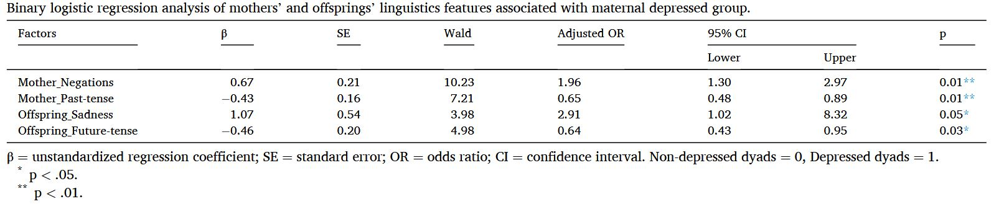
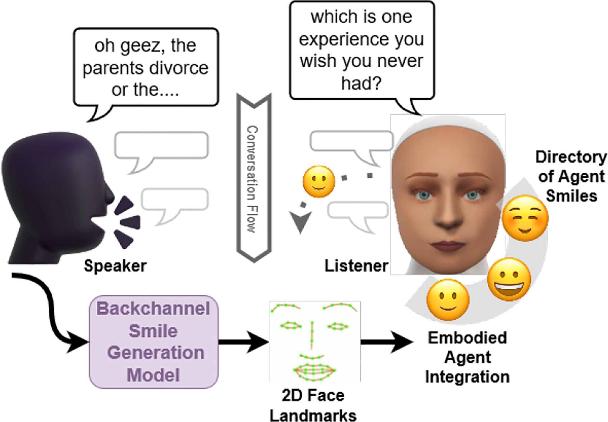
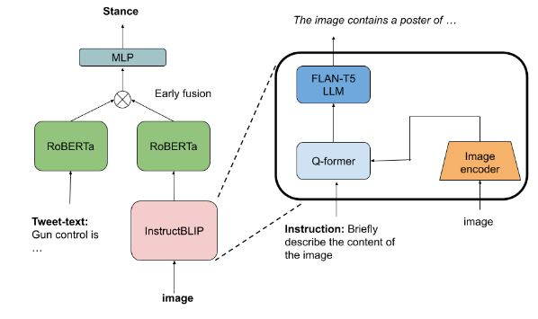
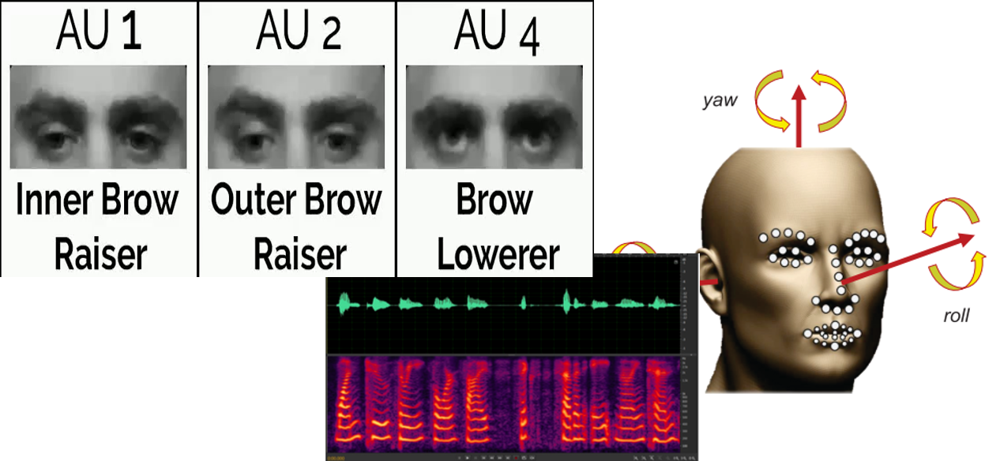
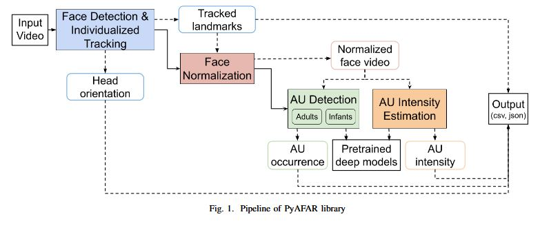
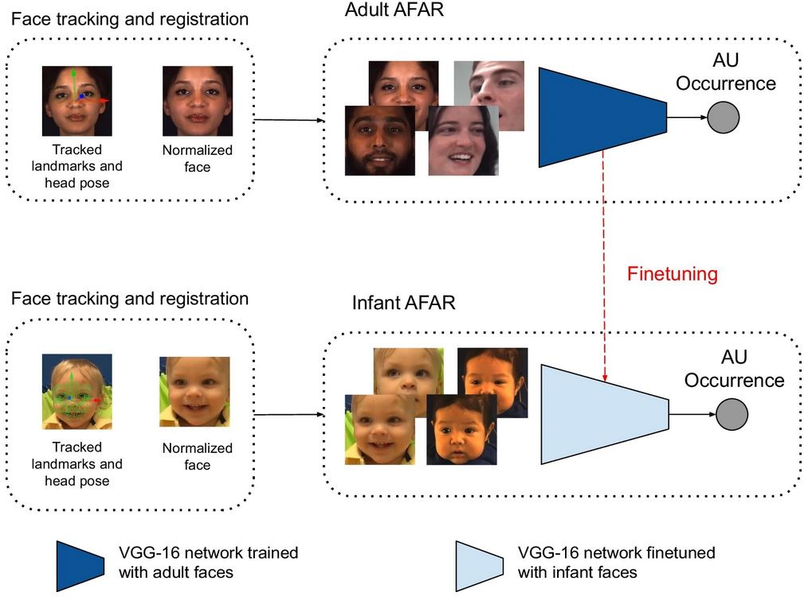
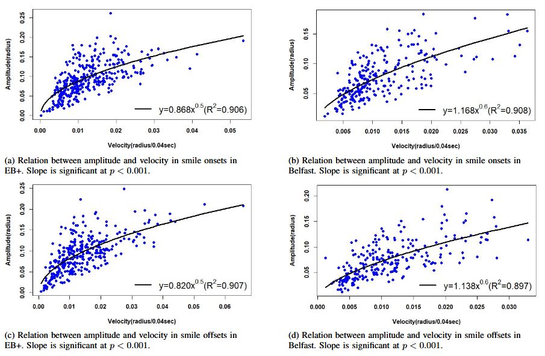
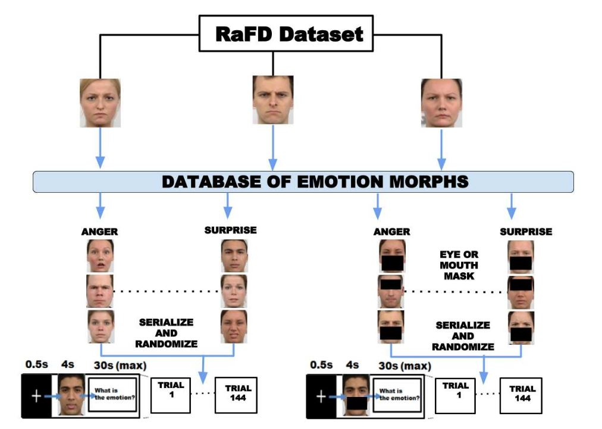
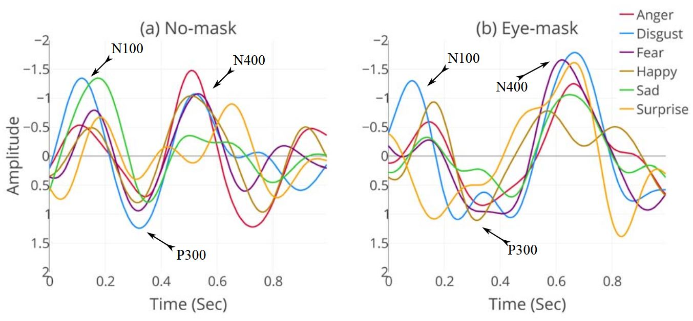

|
Maneesh Bilalpur I'm a PhD candidate at the University of Pittsburgh's School of Computing and Information, where I work on Multimodal Machine Learning. I am supervised by Prof. Jeff Cohn. My interests include utilizing facial expressions, voice prosody, body pose, and speech for applications in affective computing. I am also curious about how these multimodal behaviors shape day-to-day human communication. Prior to my PhD, I've worked at a computer vision data annotation startup Playment on semantic segmentation and object detection. My Masters of Science thesis was supervised by Prof. Ramanathan Subramanian, and Prof. Mohan Kankanhalli at iiit hyderabad. |
{kind=link}
News
- Presented my dissertation work at the Doctoral Consortium at FG 2025.
- Awarded the Provost's Dissertation Completion Fellowship for Fall 2025 at Pitt.
- Delivered a guest lecture on Multimodal LLMs for the CS 2750 course at Pitt.
- Received the Oustanding Reviewer Award at FG 2024.
ResearchMy experience of multimodal machine learning research spans multiple domains including Computer Vision, Speech Processing, and Natural Language Processing. I also tinker with statistics (mixed-effects) for hypothesis testing in human behavior. Here are some papers that I have worked on. The exhaustive list can be found on my google scholar profile. |
|  |
Language use in depressed and non-depressed mothers and their adolescent offspring
Laura A Cariola, Lisa B Sheeber, Nicholas Allen, Maneesh Bilalpur, Timothy Bird, Saurabh Hinduja, Louis-Philippe Morency, and Jeffrey F Cohn Journal of Affective Disorders (Impact Factor: 4.9), 2024 |

|
Expanding PyAFAR: A Novel Privacy-Preserving Infant AU Detector
Itir Onal Ertugrul, Saurabh Hinduja, Maneesh Bilalpur, Daniel S Messinger, and Jeffrey F Cohn IEEE FG, 2024 |
|  |
Learning to generate context-sensitive backchannel smiles for embodied ai agents with applications in mental health dialogues
Maneesh Bilalpur, Mert Inan, Dorsa Zeinali, Jeffrey F Cohn, and Malihe Alikhani AAAI Workshop, 2024 |
|  |
Argumentative stance prediction: An exploratory study on multimodality and few-shot learning
Arushi Sharma*, Abhibha Gupta*, and Maneesh Bilalpur* (*equal contributions) EMNLP Workshop on Argument Mining, 2023 |
 |
SHAP-based Prediction of Mother's History of Depression to Understand the Influence on Child Behavior
Maneesh Bilalpur, Saurabh Hinduja, Laura Cariola, Lisa Sheeber, Nicholas Allen, Louis-Philippe Morency, and Jeffrey F Cohn ACM ICMI, 2023 |
|  |
PyAFAR: Python-based automated facial action recognition library for use in infants and adults
Saurabh Hinduja, Itir Onal Ertugrul, Maneesh Bilalpur, Daniel S Messinger, and Jeffrey F Cohn IEEE ACII Demo, 2023 |
|  |
Infant AFAR: Automated facial action recognition in infants
Itir Onal Ertugrul, Yeojin Amy Ahn, Maneesh Bilalpur, Daniel S Messinger, Matthew L Speltz, and Jeffrey F Cohn Behavior Research Methods, 2023 |
|
Multimodal Feature Selection for Detecting Mothers' Depression in Dyadic Interactions with their Adolescent Offspring
Maneesh Bilalpur, Saurabh Hinduja, Laura A Cariola, Lisa B Sheeber, Nick Alien, László A Jeni, Louis-Philippe Morency, and Jeffrey F Cohn IEEE FG, 2023 |
|
|  |
Ballistic Timing of Smiles is Robust to Context, Gender, Ethnicity, and National Differences
Maneesh Bilalpur, Saurabh Hinduja, Kenneth Goodrich, and Jeffrey F Cohn IEEE ACII, 2022 |
|  |
Gender and emotion recognition with implicit user signals
Maneesh Bilalpur, Seyed Mostafa Kia, Manisha Chawla, Tat-Seng Chua, and Ramanathan Subramanian ACM ICMI, 2017 |
|  |
Discovering gender differences in facial emotion recognition via implicit behavioral cues
Maneesh Bilalpur, Seyed Mostafa Kia, Tat-Seng Chua, and Ramanathan Subramanian IEEE ACII, 2017 |
Work Experience |
|
|
Playment (acquired by Telus International)
Computer Vision Researcher
Developed and deployed interactive semantic segmentation models (including raster-to-vector conversion) to accelerate annotation. Standardized 3D point clouds and implemented 3D→2D projections for a widely used annotation tool in self-driving applications. Shipped a GDPR-compliant anonymizer that automatically blurs faces and license plates. |
|
|
|
National University of Singapore
Research Intern
with
Prof. Mohan Kankanhalli
Worked on multimodal (EEG, and eye tracking) affect recognition from facial expression stimuli at the SeSaMe (Sensor Enhanced Social Media) Centre. Published at ICMI 2018. |
Education |
|
|
University of Pittsburgh
PhD in Intelligent Systems |
|
|
|
IIIT Hyderabad
MS by Research in Electronics and Communication · 8.5 / 10.00
Thesis: “Gender Differences in Facial Emotion Perception for User Profiling via Implicit Behavioral Signals” |
|
VIT Vellore
Bachelors in Electronics and Communication · 8.98 / 10.00 |
|
Awards and Recognition
- Provost's Dissertation Completion Fellowship for Fall 2025.
- Doctoral Consortium Travel Grant at FG 2025.
- Oustanding Reviewer Award at FG 2024.
- AAAI’24 student scholarship (visa prevented attendance).
- School of Computing and Information Fellow for Fall 2019.
- ACM SIGCHI Gary Marsden Student Development Fund (to attend ICMI 2018), 2018
- Student Travel Grant award winner for ACII’17 and ICMI’18.
Miscellanea |
|
This website is an adaptation of Jon Barron's source code and parts of templates borrowed from Abhinav Shukla's website. |